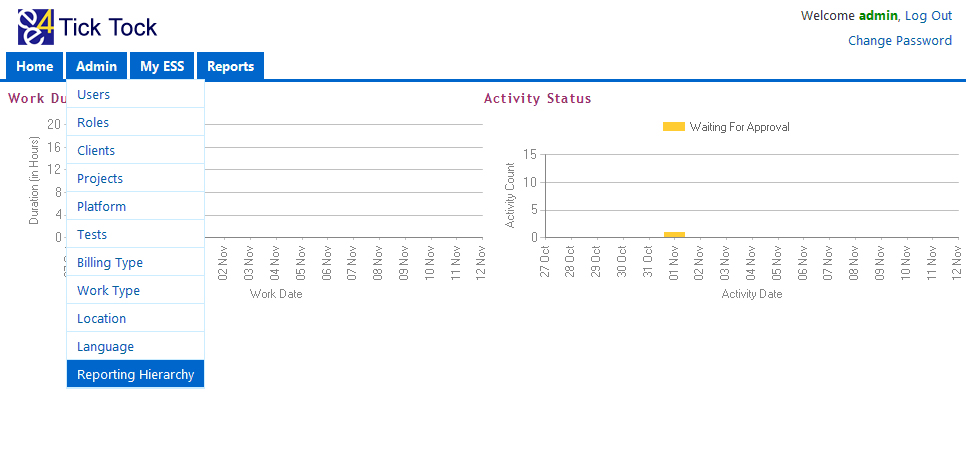
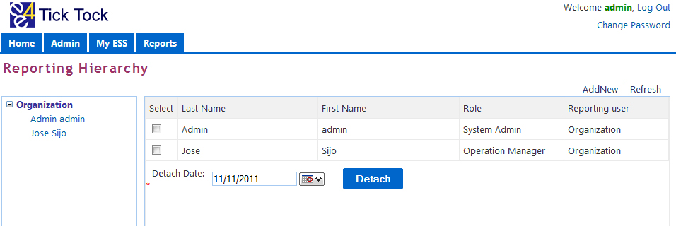
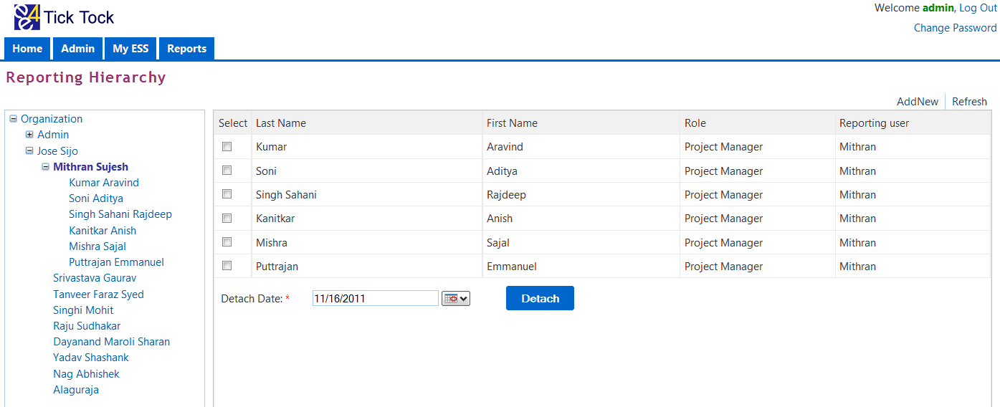
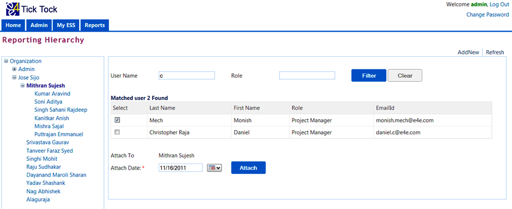
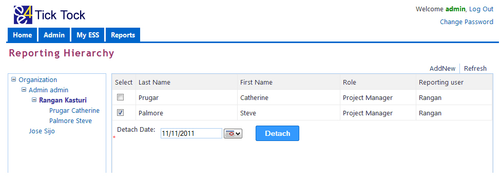

FUNCTION
- The Reporting Hierarchy page shows the existing hierarchy or reporting structure for all employees.
- It enables a user to add existing employees under him.
- Employees attached to an employee cannot be attached to another employee.
ACCESSIBLE BY
- Users who have administrator access.
STEPS TO VIEW EXISTING HIERARCHY AND ADD NEW EMPLOYEES

- From the Home page, Admin Language
- This will take us to the Reporting Hierarchy page.
- From the reporting Hierarchy page, click on the superior name to view subordinates under him or her.
- We can view the subordinate’s details like, role and reporting manager.

STEPS TO ADD EMPLOYEES UNDER SUPERIOR
- From the reporting Hierarchy page, click on the superior name to view his / her subordinates.
- Click on the employee under whom another employee has to be added.

- Then click on Add New button, which opens up the page to add an employee.
- Enter the few characters of the Name or role of the employee to be added under a superior.
- Then click on the Filter button to search employees meeting the search criteria.
- Then select the employee by marking the check box
- Select the date from which the employee is added under the superior.
- Then click on the attach button to attach the employee.
In the below example the selected employee Monish Mech will be added under Mithran Sujesh

STEPS TO DETACH AN EMPLOYEE FROM HIS/HER SUPERIOR
- From the reporting Hierarchy page, click on the superior name to view subordinates under him or her.
- If you want to remove an employee from a superior, select the user by clicking the check box.
- Then select the date from which the subordinate has to be detached from the superior and click on the Detach button.

Compatible browsers
On Windows OS


On Mac OS